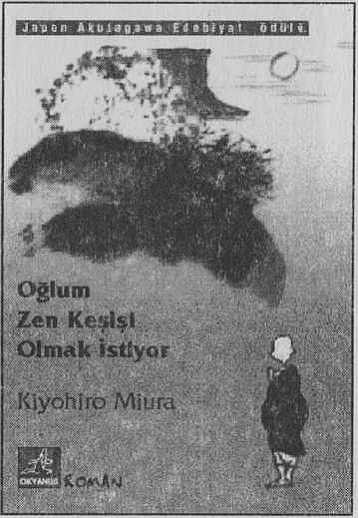

“Oğlum keşiş olmak istediğini ilk söylediğinde bütün bunların nasıl olduğunu düşündüm ve bu tuhaf karara hayret ettim. ”
Akutagawa ödülü kazanmış otobiyografik temelli bu romanda, olaylar yazarın altı yaşındaki oğlu Ryota’yı Zen Meditasyonu yaptığı tapınağa götürmesiyle başlar. Amacı oğlunu ruhsal açıdan eğitmek değil, annesinin biraz evde başını dinleyebilmesini sağlamaktır. İki yıl sonra Ryota birden Zen keşişi olmak istediğini söyleyince çok şaşırır.
Gerçekte Ryota pek keşişliğe uyan bir çocuk değildir. Diğer çocuklar gibi televizyon seyretmeyi, Mc Donald’s hamburgerini ve arabaları sevmektedir...